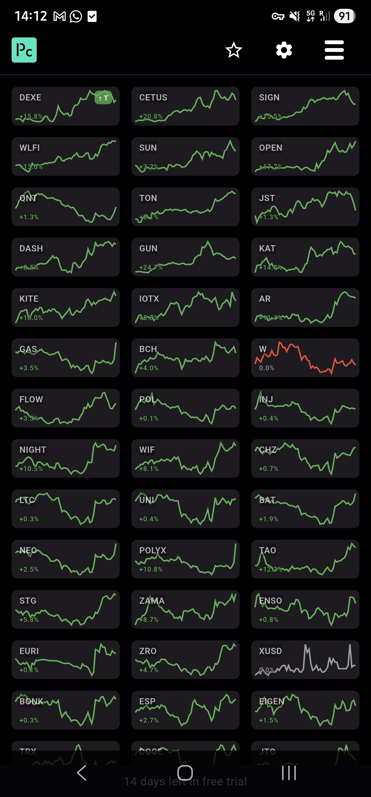
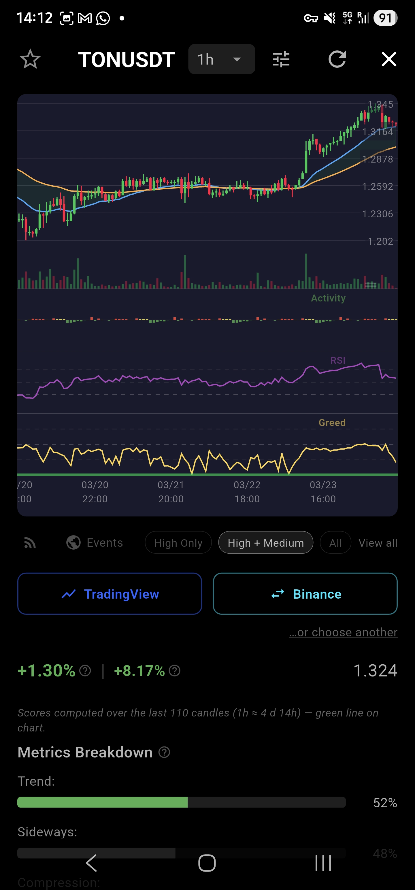
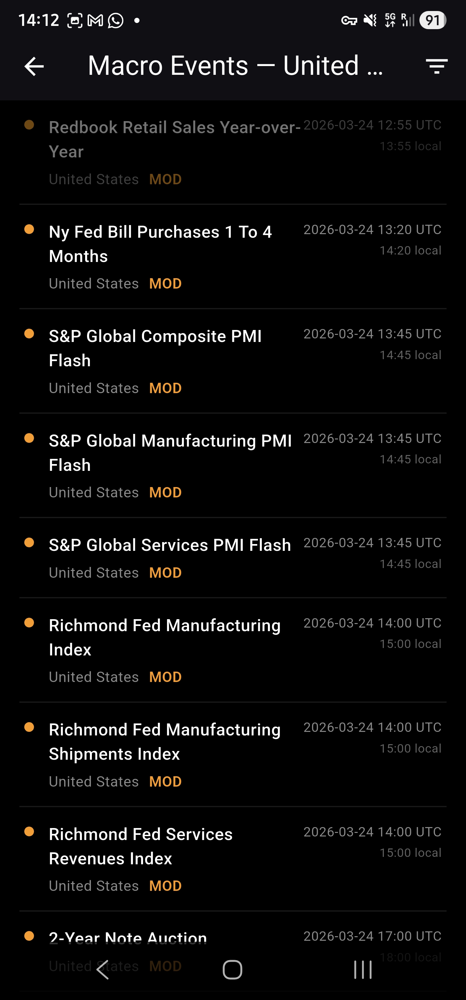
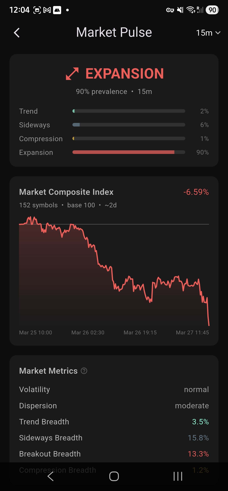
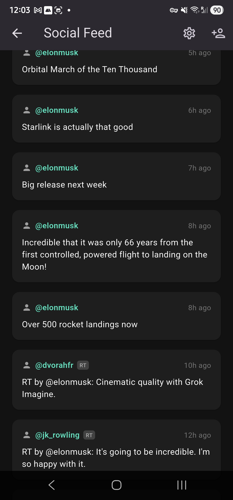

About
Pano Charts is an app I personally found lacking when trading, so decided to write one. I wanted a quick screener with plenty of tiny charts to be able to compare at a glance, quickly. Did that, and then thought "how about actually sorting them a bit?". Created a few simple sorting criteria and I thought I would like to be able to sort by sideways action, as my favourite trading setup. So added sideways action detection algorithm. Actually five of them, trying to nail the best one. Then also compression and breakout ranking, because it seemed logical: sideways -> compression -> breakout -> trend. So this is all now in the app, but I was lacking confirmation phase, so added detailed view with indicators I found to be most useful (RSI, EMA clouds, ATR). While at it, I thought it would be good to add some context and ended up including macro event list. Put event labels on the chart and "why not extend it into the future a bit?", so now you have future events on the x axis as well. Then I thought "what about Fear & Greed index?", and added that too. And a bubble maps, while at it. So now it's a full blown app, and I use it every day, and I hope you will find it useful too.
Tagline
150 charts. One glance. Every edge.
Screenshots





Download
What it is
Pano Charts is a crypto market screener built for traders who move fast. Instead of flipping between dozens of browser tabs, you get all 150 top tokens laid out as tiny interactive charts — sorted, scored, and color-coded by the patterns that actually matter: sideways consolidation, compression squeezes, breakout momentum, and trend strength. Tap any symbol and you're instantly in a full candlestick chart with indicators, macro event markers projected into the future, volatility activity overlay, crowd-positioning gauges, and one-tap links to your exchange. Whether you're scanning for your next entry or monitoring open positions, Pano Charts turns hours of manual chart-flipping into seconds of structured insight.
What it does
- 150-token sparkline grid — see every top crypto at a glance, with real-time flash-dot updates and hi-res normalized sparklines
- Custom scoring engine — proprietary algorithms rank tokens by sideways structure, compression, breakout strength, and trend predictability
- Interactive candlestick charts — pinch-zoom, pan, crosshair readout, with RSI, EMA clouds, and ATR indicators
- Volatility activity overlay — shows which hours (or days) are historically most active, derived from 150 days of minute-level data with adaptive color-coding
- Macro event timeline — economic events plotted directly on the chart, including future projections so you can see what's coming
- Market regime detection — classifies overall market state (compression, sideways, trend, expansion) with transition probability forecasts
- Crowd positioning gauges — fragility scores, funding rates, and OI data reveal when the crowd is dangerously one-sided
- Retail behavior engine — greed, fear, patience, and panic dimensions per token, so you can trade against the herd
- Setup quality scores — independent ratings for compression breakouts, trend continuations, and range reversions, with a unified confidence indicator (green/yellow/red dot) showing how trustworthy the setup is right now
- Confidence-aware breakout probability — raw breakout scores are adjusted by signal confidence so weak-context spikes don't mislead you
- Signal labels — up to 3 plain-English labels per token ("Breakout pressure building", "Crowded longs") with strength indicators
- Bubble map — market-cap visualization - volume and price change mode
- Fear & Greed index — classic sentiment gauge always one tap away
- News feed — curated crypto articles without leaving the app
- Auto-refresh — staggered live updates across all views, from 10-second intervals on 1m charts to hourly on dailies
- One-tap trade execution — jump directly to your preferred exchange with the symbol pre-loaded
- Favourites & filters — star tokens, hide stablecoins, toggle columns, sort by any metric
Contact
Questions, feedback or bug reports? Reach out:
- Email: info@panocharts.com
- Telegram: t.me/panocharts